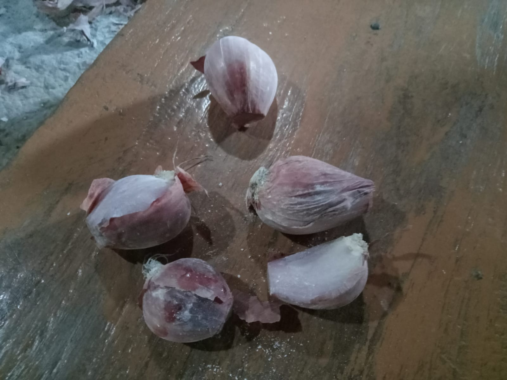
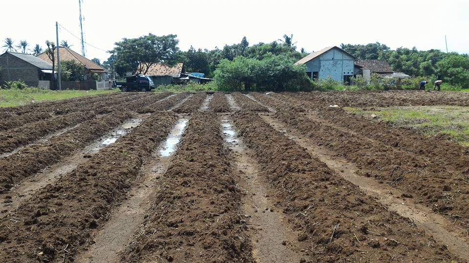
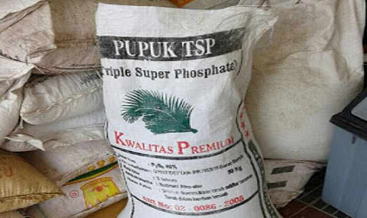
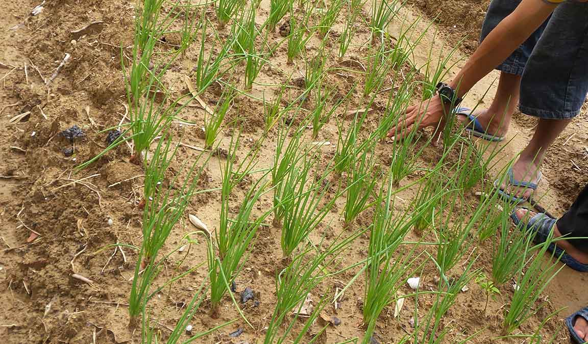
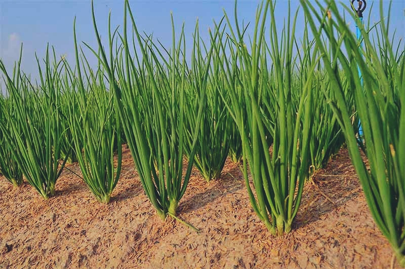
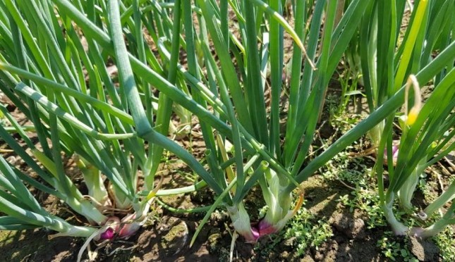
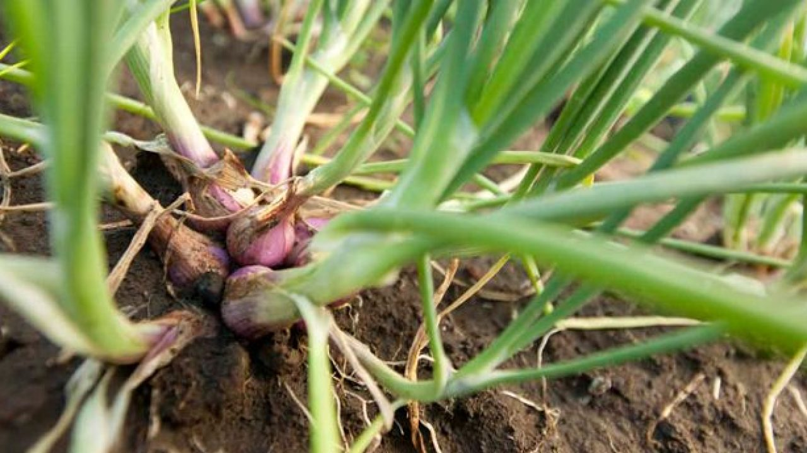
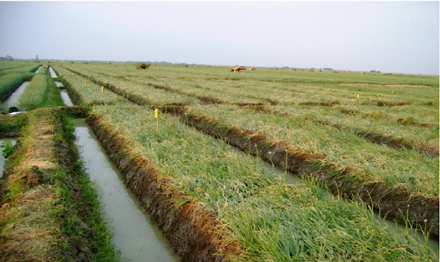
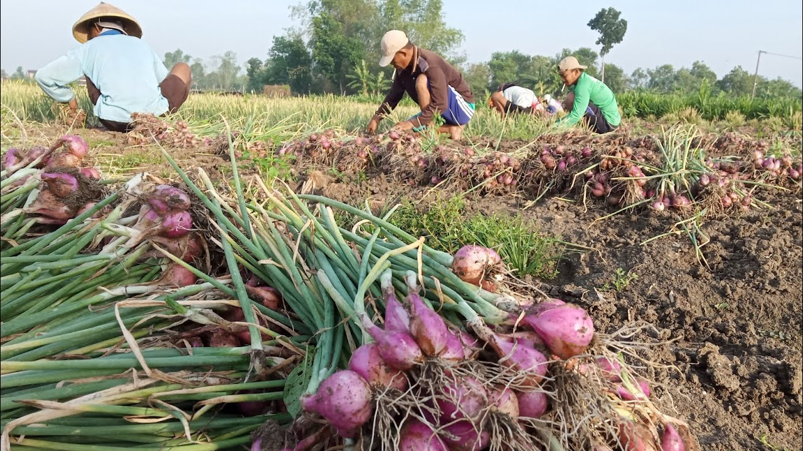

Langkah-langkah Membesarkan Bawang Merah
Mohammad Zainal Fuad
12/01/2022
1. Bawang merah Biasanya dipenges dulu
Didaerah saya memenges bibit bawang merah merupakan memotong daun atau sebagian ujung daging bibit bawang merah yang sudah siap tanam, biasanya potonganya sedikit saja. Bawang merah biasanya dipenges dulu sebelum ditanamkan ke ladon agar tujuanya biar tumbuhnya semakin cepat karna apa bila tidak dipenges biasanya bawang merah lama tumbuh daun nya. Ada juga bawang merah yang tidak pengesan dan dia tidak tumbuh daunya lalu mati, Maka dari itu dia harus dipenges supaya tumbuh dengan maksimal.
2. Ditanamkan ke tanah yang sudah disiapkan
Menanam juga ada caranya tersendiri, yaitu dengan mengikuti pola garukan tanah dan menanamya dengan posisi yang benar juga. Posisi penanaman bawang merah yang benar adalah dengan akar dibawah dan bekas pengesan diatas, karna daun tumbuhnya keatas dan akar tumbuh kebawah untuk mencari mineral.
3. Dari umur 1-6 hari
-Bawang merah harus disiram tiap harinya.
-Diatas adalah contoh vidio orang menyiram bawang merah
- Diumur 6 hari bawamg merah yang tidak tumbuh atau mati diganti dengan bibit yang baru karna untuk memaksimalkan bobot tiap panenya
-Di imir 1-3 hari bawang merah diberikan pupuk dasar yaitu berupa(TSP)
4. Dari umur 7 - 19 hari
-Bawang merah harus disiram tiap harinya.
-Di usia 6 hari keatas Penyemprotan dilakukan dengan kurun waktu 4 hari sekali sesuai curah hujan.
-Biasanya untuk menghindari atau mencegah penyakit inteksid dan fungisida.
-Penyemprotan sesuai dengan penyakit atau petani biasanya sudah mengira ngira waktu ini biasanya yang keluar adalah penyakit ini.
5. Dari umur 20-28 hari
-Bawang merah harus disiram tiap harinya.
-Biasanyabawang merah dimur segini sangat sering terjangkit penyakit ular.
Seperti sebelumya bawang merah harus disemprot 4 hari sekali sesuai kenutuhan.
-Nb: Cara mengatasi penyakit ada di tampilan sebelumya.
6. Dari umur 29-33 hari

-Bawang merah harus disiram tiap harinya.
-Diumur kisaran 29-32 Bawang merah harus dipupuk lagi menggunakan pupuk (NPT + KCL) agar tanaman dan tanahnya tidak mudah terkena penyakit.
-Di usia sekarang keatas Bawang merah sangat rentan terkena moler.
Seperti sebelumya bawang merah harus disemprot 4 hari sekali sesuai kenutuhan.
-Nb: Cara mengatasi penyakit ada di tampilan sebelumya.
7. Dari umur 34-40 hari
-Bawang merah harus disiram tiap harinya.
-Disini bawang merah sudah mulai membentuk
-Menyemprot insekda maupun fungisida tiap 4 hari sekali dengan melihat kondisi
-Biasanya diumus segini bawang merah rawan diserang ulat dan moler
-Nb: Cara mengatasi penyakit ada di tampilan sebelumya.
8. Dari umur 41-54 hari
-Bawang merah harus disiram tiap harinya.
-Daging bawang merah mengalami perkembangan
-Sampai sini bawang merah juga wajib disemprot untuk menghindari penyakit moler dan sarang geni
-Nb: Cara mengatasi penyakit ada di tampilan sebelumya.
9. Dari umur 41-54 hari

-Bawang merah tidak harus disiram tiap hari.
-Disini bawang merah siap untuk panen, tinggal menunggu dia alum/layu saja
10. Bawang merah siap panen
Gambar diatas ini ciri - ciri bawang merah yang siap panen.

TRIMAKASIH.